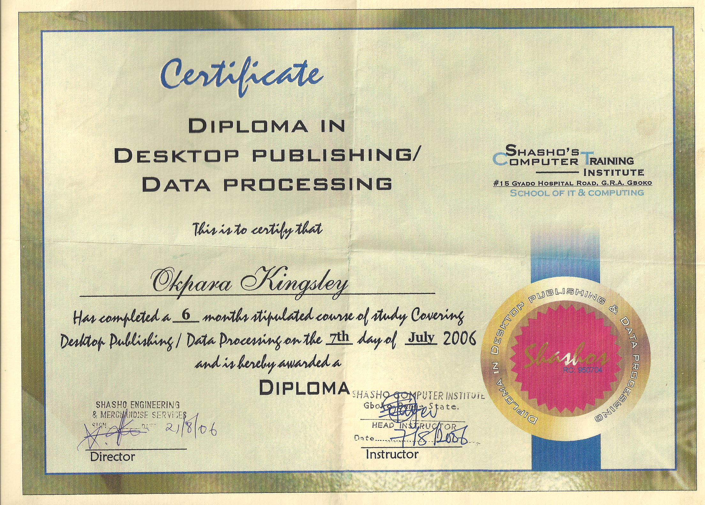
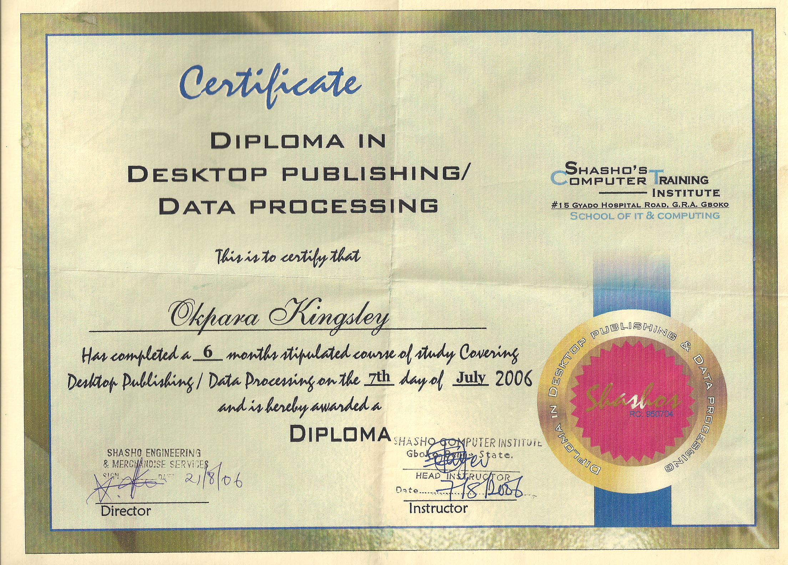

BIO DATA
OKPARA KINGSLEY ANAYO
CONTACT
No 4 Aduroju Jaji Close, off Odukoya Abayomi street, off Home Science Street, Ajegunle-Ilo, Alagbado, Ifako-Ijaiye, Lagos
T: 08066056233, 09055085435 E: kingsconsult001@gmail.com
PERSONAL SUMMARY
A bright, talented and hardworking ICT Expert with broad experience in both business and consumer lines.
Extensive knowledge of electronics and telecommunications from hands on experience and educational training,
including Science Degree in computer/mathematics, Strengths in problem-solving and customer communications.
Having effective organizational skills and proficiency with administrative and practical tasks. An excellent
communicator, who can relate well with colleagues at all levels and is able to work well as part of a team
and as an individual.
ACADEMIC QUALIFICATIONS
| Year Obtained | Institution Attended | Certificate Obtained | Address |
|---|---|---|---|
| 2007 - 2011 | Enugu State University of Science and Technology | B.Ed Mathematics/Computer Education | Enugu, Enugu State |
| 2006 | Shasho’s Computer institute | Diploma In Data Processing/Desktop publishing | Gboko, Benue state |
| 1999 – 2005 | Federal Government College | WASSCE | Vandeikya, Benue State |
| 1991 – 1999 | Robert F. Kennedy Nur/Pri Sch | First School Leaving Certifice (FSLC) | Gboko, Benue state |
KEY SKILLS AND COMPETENCIES
- Strong programming skills on NodeJs (JavaScript).
- Computer proficient (Microsoft office, including Word, Excel).
- Intermediate programming skills with python programming language.
- Excellent knowledge of Corel Draw & other graphics software.
- Enthusiastic, flexible and capable of working on own initiative.
- Comprehensive understanding of the Data Protection Act.
- An ability to work to deadlines whilst ensuring accuracy and efficiency.
- Capable of working in a manner conducive with the production of high quality data.
- Able to work fast and also accurately.
WORK EXPERIENCE
| Year | Organization | Address |
|---|---|---|
| 2017 - Present | Saviour Primary School | Ifako- Ijaiye, Lagos |
| 2013 - 2017 | Sofunix International College | Iroko, Ogun State |
| 2012 – 2013 | Government Comprehensive Sec. Sch | Ugba, Logo. Benue State |
| 2006 | StephKelems Computer | Gboko, Benue State |
AREAS OF EXPERTISE
- Typing skills
- Data entry skills
- Graphics designing skills
- Programming skills
- Processing data
- Evaluating information
- Data management
PERSONAL SKILLS
- Accuracy
- Methodical
- Attention to detail
REFERENCES
| Name | Phone | Organization | |
| Mr. Ayooluwa Kayode | 08023101515 | kayode.ayooluwa@yahoo.com | Engineer, Guinness Nigeria, Lagos |
| Mr. Oni Sola | 08038333920 | solaoni2000@yahoo.com | CEO, Sofunix Investment and Communications |

 
